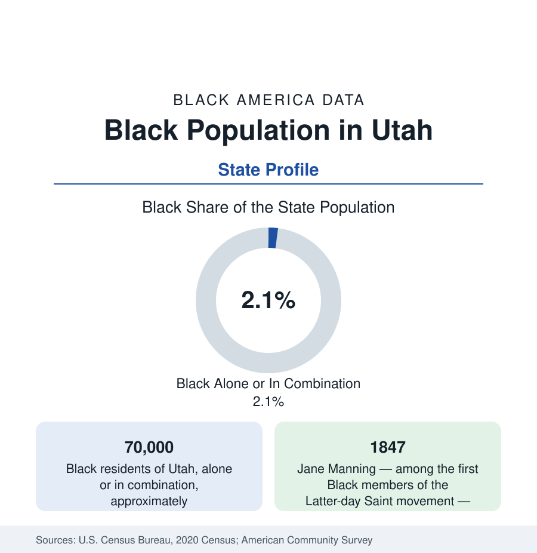

Black Census
Black Population in Utah: Jane Manning's Long Road
About 70,000 Black Utahns — one in forty-seven residents — in the fastest-growing small Black population of the Mountain West. The census profile.

Utah holds about 70,000 Black residents — Black alone or in combination — roughly one in forty-seven of its people, with Black alone at about 39,000, or 1.2 percent. Utah's Black population is among the smallest in share in this reference and among the fastest-growing in percentage terms — a frontier-pioneer layer, a military and railroad layer, and a modern layer of refugees and tech-era migrants in the Salt Lake Valley. This article profiles the population in the census data.
The Pioneer and Railroad Layers
Black Utah's founding story is singular in the western record. Jane Elizabeth Manning, a free Black convert from Connecticut, walked much of the way to Nauvoo and then crossed the plains to reach the Salt Lake Valley in 1847 — among the very first Black residents of Utah — and her family's petitions and faithfulness across the following century made the Mannings the most documented Black pioneer family in the state; the Latter-day Saint movement's own historical scholarship has restored her to the center of the pioneer narrative in the current era. A handful of enslaved people were brought by southern converts in the same migration (Utah legalized a form of slavery by territorial statute in its early years, abolished in 1862), and the free Black community of Salt Lake City — porters, barbers, the Calvary Baptist congregation (founded 1890s era) — formed around the railroad economy after 1869, when the transcontinental junction at Ogden made that city the West's rail crossroads and its 25th Street a famous, rough, multicultural strip with a Black community at its core.
The Modern Map
The modern population centers overwhelmingly in the Salt Lake Valley: Salt Lake City itself is roughly 3 percent Black, with West Valley City (the valley's second city) at a somewhat higher share, and the suburban corridor — Taylorsville, Murray, Sandy, Midvale — holding a dispersed majority of the metro's Black residents. Ogden, the old railroad city, records the state's highest sustained share among its larger cities (in the range of 3 to 4 percent), anchored by Hill Air Force Base in adjoining Davis County. The military thread runs throughout: Hill AFB, the Tooele depot legacy, and Dugway cycle Black service families through the northern counties. Beyond the Wasatch Front, the state records Black shares under 1 percent in most counties, with the university towns (Logan, Provo, Cedar City, St. George) holding small institution-shaped communities.
Refugees and the New Layer
Salt Lake City is one of the interior West's significant refugee-resettlement hubs, and its African communities — Sudanese (among the earlier and larger groups), Somali, Congolese, Burundian, Ethiopian, and Eritrean — form a substantial share of the state's Black population growth in the past two decades. The resettlement geography (South Salt Lake, the west-side valley districts, and the suburbs as families stabilize) mirrors Lewiston's and Omaha's patterns at valley scale, and the second generation is now the Salt Lake school districts' fastest-changing data. Layered with them are the tech corridor's professionals (the 'Silicon Slopes' economy of Lehi-to-Draper), the university communities, and Black Latter-day Saint families whose presence in the state's majority faith is a small but institutionally significant strand the church's own publications document.
Indicators and Change
The small-population caution applies with force: 70,000 people, multiple compositions. The survey data describe a population younger than the state's (itself the nation's youngest), incomes in the resettlement communities starting low and the professional and military layers at or above the national Black figures, educational attainment in the aggregate near the national Black pattern. The estimates are the signal: Utah's Black population has multiplied severalfold since 1990 and continues to post percentage growth at the top of the state table — the Wasatch Front's overall boom carrying the smallest community with it.
Reading the Utah Numbers
Utah's profile is the pioneer paradox: the Black community with perhaps the most remarkable founding story of any western state — a woman who crossed the plains on foot in 1847 to join a faith that would not fully open its priesthood to her descendants until 1978 — remains one of the smallest in the data, and one of the fastest-growing. Both facts are the profile, and the distance between 1847 and the present estimates is its true subject.
More in Black Census
The Black Population of the United States: Size, Definitions, and Distribution
The Black population of the United States totals 52.8 million — 15.4 percent of the nation. How the Census Bureau defines and counts the population, and where it lives.
Black Median Household Income in the United States
Black median household income stands at $56,490 in the Census Bureau's annual income report — how the figure is measured, how it compares, and what drives it.
The Black Poverty Rate: Levels, Children, and the Long Trend
The official Black poverty rate is 17.1 percent — against 11.1 percent nationally and 7.7 percent for non-Hispanic White Americans. How poverty is measured and what the data show.
Source: U.S. Census Bureau, 2020 Census; American Community Survey; Population Estimates Program.